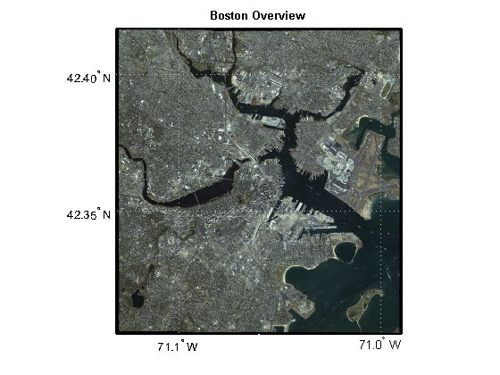
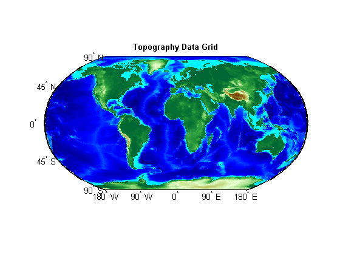
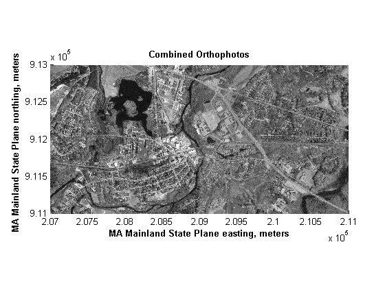
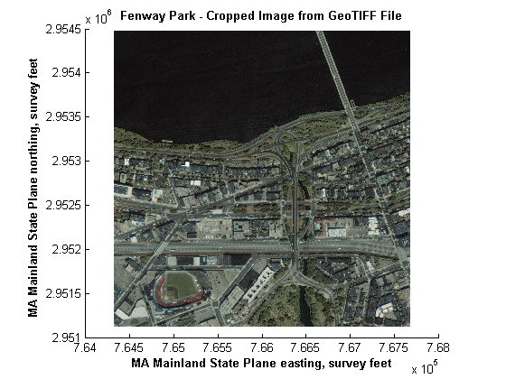
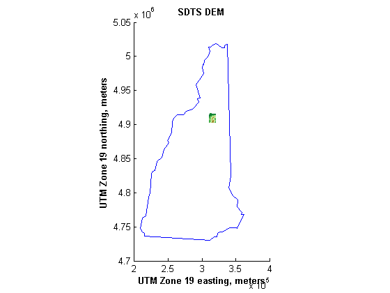
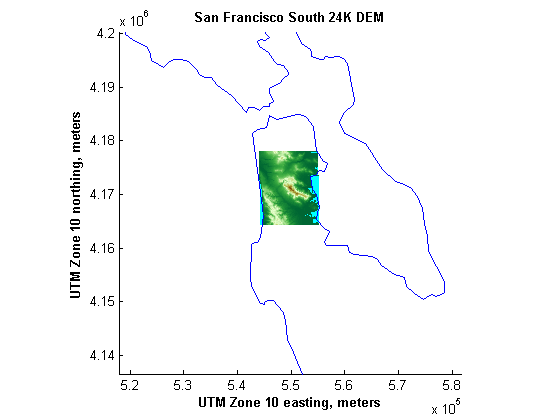
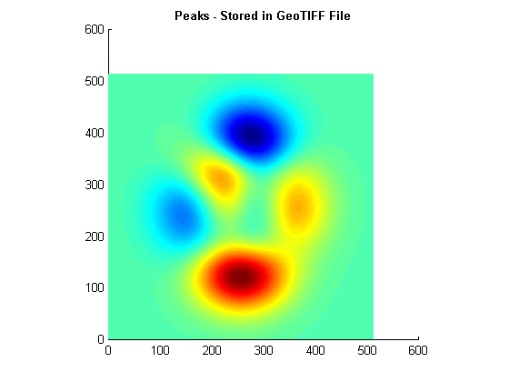
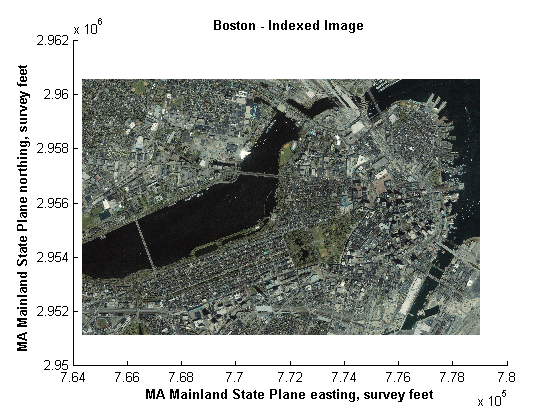

Exporting Images and Raster Grids to GeoTIFF
This gallery illustrates how to write georeferenced data to GeoTIFF files using geotiffwrite. The Tagged-Image File Format (TIFF) has emerged as a popular format to store raster data. The GeoTIFF specification defines a set of TIFF tags that describe "Cartographic" information associated with the TIFF raster data. Using these tags, geolocated imagery or raster grids with coordinates referenced to a Geographic Coordinate System (latitude and longitude) or a (planar) Projected Coordinate System can be stored in a GeoTIFF file.
This demo illustrates how to store data referenced to standard geographic and projected coordinate systems to GeoTIFF files.
Contents
- Setup: Define a Data Directory and Filename Utility Function
- Example 1: Write an Image Referenced to Geographic Coordinates
- Example 2: Write a Data Grid Referenced to Geographic Coordinates
- Key Concept: Data Organization in GeoTIFF Files
- Example 3: Write an Image Referenced to a Projected Coordinate System
- Example 4: Write a Cropped Image from a GeoTIFF File
- Example 5: Write SDTS DEM Data Referenced to UTM Coordinates
- Example 6: Write USGS 24K DEM Data Referenced to UTM Coordinates
- Example 7: Write Non-Image Data to a TIFF File
- Example 8: Modify an Existing File While Preserving Meta Information
- Cleanup: Remove Data Directory
- Credits
Setup: Define a Data Directory and Filename Utility Function
This demo creates several temporary GeoTIFF files and uses the variable datadir to denote their location. The value used here is determined by the output of the tempdir command, but you could easily customize this. The contents of datadir are deleted at the end of the demo.
datadir = fullfile(tempdir, 'datadir'); if ~exist(datadir, 'dir') mkdir(datadir) end
Define an anonymous function to prepend datadir to the input filename:
datafile = @(filename)fullfile(datadir, filename);
Example 1: Write an Image Referenced to Geographic Coordinates
Write an image referenced to WGS84 geographic coordinates to a GeoTIFF file. The original image (boston_ovr.jpg) is stored in JPEG format, with referencing information external to the image file, in the "world file" (boston_ovr.jgw). The image provides a low resolution "overview" of Boston, Massachusetts, and the surrounding area.
Read the image from the JPEG file.
basename = 'boston_ovr'; imagefile = [basename '.jpg']; RGB = imread(imagefile);
Obtain a referencing object from the world file.
worldfile = getworldfilename(imagefile);
R = worldfileread(worldfile, 'geographic', size(RGB));
Write the image to a GeoTIFF file.
filename = datafile([basename '.tif']);
geotiffwrite(filename, RGB, R)
Notice that the GeoTIFF information from the file indicates that the Geographic Coordinate System (GCS) is "WGS 84" and that all fields (PCS, Projection, MapSys, Zone, CTProjection, ProjParm, ProjParmId, and UOMLength) associated with a projected coordinate system are empty.
disp(geotiffinfo(filename))
Filename: 'C:\TEMP\R2011ad_384_3332\datadir\boston_ovr.tif'
FileModDate: '02-Feb-2011 22:17:41'
FileSize: 1674212
Format: 'tif'
FormatVersion: []
Height: 769
Width: 722
BitDepth: 8
ColorType: 'truecolor'
ModelType: 'ModelTypeGeographic'
PCS: ''
Projection: ''
MapSys: ''
Zone: []
CTProjection: ''
ProjParm: []
ProjParmId: {}
GCS: 'WGS 84'
Datum: 'World Geodetic System 1984'
Ellipsoid: 'WGS 84'
SemiMajor: 6378137
SemiMinor: 6.3568e+006
PM: 'Greenwich'
PMLongToGreenwich: 0
UOMLength: ''
UOMLengthInMeters: 1
UOMAngle: 'degree'
UOMAngleInDegrees: 1
TiePoints: [1x1 struct]
PixelScale: [3x1 double]
SpatialRef: [1x1 spatialref.GeoRasterReference]
RefMatrix: [3x2 double]
BoundingBox: [2x2 double]
CornerCoords: [1x1 struct]
GeoTIFFCodes: [1x1 struct]
GeoTIFFTags: [1x1 struct]
Re-import the new GeoTIFF file and display the Boston overview image, correctly located, in a map axes.
figure ax = gca; usamap(R.Latlim, R.Lonlim) setm(ax, ... 'PLabelLocation', .05, ... 'PlabelRound', -2, ... 'PlineLocation', .05) geoshow(filename) title('Boston Overview', 'FontWeight', 'bold')
Example 2: Write a Data Grid Referenced to Geographic Coordinates
Write a data grid referenced to WGS84 geographic coordinates to a GeoTIFF file.
load('topo'); Z = topo; R = georasterref('RasterSize', size(Z), ... 'Latlim', [-90 90], 'Lonlim', [0 360]); filename = datafile('topo.tif'); geotiffwrite(filename, Z, R);
The values in the data grid range from -7473 to 5731. Display the grid as a texture-mapped surface rather than as an intensity image.
figure('Renderer','zbuffer') ax = gca; worldmap world; gridm off setm(ax, ... 'MLabelParallel', -90, ... 'MLabelLocation', 90) h = geoshow(filename, 'DisplayType', 'texturemap'); demcmap(get(h,'CData')) title('Topography Data Grid', 'FontWeight', 'bold')
Key Concept: Data Organization in GeoTIFF Files
One of the important concepts to understand when exporting data with geotiffwrite is that the pixels (grid cells) in the file are ordered as in an image; the columns will always start from the north and the rows will always start from the west. This means that the GeoTIFF ModelPixelScaleTag values are always positive. From the previous example:
filename = datafile('topo.tif');
info = geotiffinfo(filename);
disp(info.GeoTIFFTags.ModelPixelScaleTag)
1 1 0
However, note that the input data from topo.mat is organized with the columns starting from the south:
disp(R.ColumnsStartFrom)
south
Hence, the data in the GeoTIFF file, in this case, is flipped compared to the input data:
[fileZ, fileR] = geotiffread(filename); isequal(fileZ, flipud(Z))
ans =
1
and the columns start from the north:
disp(R.ColumnsStartFrom)
south
If you need the data in your workspace to match again, then flip the Z values and set the referencing object such that the columns start from the south:
fileR.ColumnsStartFrom = 'south';
fileZ = flipud(fileZ);
isequal(fileZ, Z)
ans =
1
The data in the GeoTIFF file is encoded with positive scale values so that when viewed with ordinary TIFF-viewing software, the northern edge of that data set is at the top. If you absolutely need the data layout in the file to match the input data layout, you can construct a Tiff object and use it to reset the ModelPixelScaleTag, the ModelTiepointTag, the Compression tag, and the image data.
t = Tiff(filename, 'r+'); pixelScale = t.getTag('ModelPixelScaleTag'); pixelScale(2) = -pixelScale(2); t.setTag('ModelPixelScaleTag', pixelScale); tiepoint = t.getTag('ModelTiepointTag'); tiepoint(5) = R.intrinsicToGeographic(.5, .5); t.setTag('ModelTiepointTag', tiepoint); t.setTag('Compression', Tiff.Compression.None) t.write(Z); t.rewriteDirectory; t.close
You can verify that the referencing object and data grid from the file match the input in this case.
[Z2, R2] = geotiffread(filename); isequal(Z2, Z) isequal(R2, R)
ans =
1
ans =
1
Example 3: Write an Image Referenced to a Projected Coordinate System
Write the Concord orthophotos to a single GeoTIFF file. The two adjacent (west-to-east) georeferenced grayscale (panchromatic) orthophotos cover part of Concord, Massachusetts, USA. The concord_ortho.txt file indicates that the data are referenced to the Massachusetts Mainland (NAD83) State Plane Projected Coordinate System. Units are meters. This corresponds to the GeoTIFF code number 26986 as noted in the GeoTIFF specification at http://www.remotesensing.org/geotiff/spec/geotiff6.html#6.3.3.1 under PCS_NAD83_Massachusetts.
Read the two orthophotos and combine the images.
X_west = imread('concord_ortho_w.tif'); X_east = imread('concord_ortho_e.tif'); X = [X_west X_east];
Use their world files and sizes to construct a referencing object for each image, and construct a new one for their combination.
R_west = worldfileread('concord_ortho_w.tfw', 'planar', size(X_west)); R_east = worldfileread('concord_ortho_e.tfw', 'planar', size(X_east)); R = R_west; R.XLimWorld = [R_west.XLimWorld(1) R_east.XLimWorld(2)]; R.RasterSize = size(X);
Write the data to a GeoTIFF file. Use the code number, 26986, indicating the PCS_NAD83_Massachusetts Projected Coordinate System.
coordRefSysCode = 26986; filename = datafile('concord_ortho.tif'); geotiffwrite(filename, X, R, 'CoordRefSysCode', coordRefSysCode);
Notice that the GeoTIFF information from the file indicates that the Geographic Coordinate System (GCS) is "NAD83" and that all fields associated with a Projected Coordinate System are filled in with appropriate values.
disp(geotiffinfo(filename))
Filename: 'C:\TEMP\R2011ad_384_3332\datadir\concord_ortho.tif'
FileModDate: '02-Feb-2011 22:17:51'
FileSize: 8068660
Format: 'tif'
FormatVersion: []
Height: 2000
Width: 4000
BitDepth: 8
ColorType: 'grayscale'
ModelType: 'ModelTypeProjected'
PCS: 'NAD83 / Massachusetts Mainland'
Projection: 'SPCS83 Massachusetts Mainland zone (meters)'
MapSys: 'STATE_PLANE_83'
Zone: 2001
CTProjection: 'CT_LambertConfConic_2SP'
ProjParm: [7x1 double]
ProjParmId: {7x1 cell}
GCS: 'NAD83'
Datum: 'North American Datum 1983'
Ellipsoid: 'GRS 1980'
SemiMajor: 6378137
SemiMinor: 6.3568e+006
PM: 'Greenwich'
PMLongToGreenwich: 0
UOMLength: 'metre'
UOMLengthInMeters: 1
UOMAngle: 'degree'
UOMAngleInDegrees: 1
TiePoints: [1x1 struct]
PixelScale: [3x1 double]
SpatialRef: [1x1 spatialref.MapRasterReference]
RefMatrix: [3x2 double]
BoundingBox: [2x2 double]
CornerCoords: [1x1 struct]
GeoTIFFCodes: [1x1 struct]
GeoTIFFTags: [1x1 struct]
Display the combined Concord orthophotos.
figure mapshow(filename) title('Combined Orthophotos', 'FontWeight', 'bold') xlabel('MA Mainland State Plane easting, meters', 'FontWeight', 'bold') ylabel('MA Mainland State Plane northing, meters', 'FontWeight', 'bold')
Example 4: Write a Cropped Image from a GeoTIFF File
Write the first 1024 columns and last 1024 rows of a GeoTIFF file to a new GeoTIFF file.
Read the RGB image and referencing information from the boston.tif GeoTIFF file.
[A, R] = geotiffread('boston.tif');
Create the cropped image.
row = [size(A,1)-1024+1 size(A,1)]; col = [1 1024]; subImage = A(row(1):row(2), col(1):col(2), :);
Create a new referencing object for the cropped image.
xi = col + [-.5 .5]; yi = row + [-.5 .5]; [xlim, ylim] = R.intrinsicToWorld(xi, yi); subR = R; subR.RasterSize = size(subImage); subR.XLimWorld = sort(xlim); subR.YLimWorld = sort(ylim);
Write the cropped image to a GeoTIFF file. Use the GeoKeyDirectoryTag from the original GeoTIFF file.
info = geotiffinfo('boston.tif'); filename = datafile('boston_subimage.tif'); geotiffwrite(filename, subImage, subR, ... 'GeoKeyDirectoryTag', info.GeoTIFFTags.GeoKeyDirectoryTag);
Display the GeoTIFF file containing the cropped image.
figure mapshow(filename); title('Fenway Park - Cropped Image from GeoTIFF File', 'FontWeight', 'bold') xlabel('MA Mainland State Plane easting, survey feet', 'FontWeight', 'bold') ylabel('MA Mainland State Plane northing, survey feet','FontWeight', 'bold')
Example 5: Write SDTS DEM Data Referenced to UTM Coordinates
Write the Mount Washington SDTS DEM terrain data to a GeoTIFF file.
sdtsFilename = '9129CATD.ddf';
Read the SDTS DEM data from the file.
[Z, refmat] = sdtsdemread(sdtsFilename);
Convert the referencing matrix to a spatialref.MapRasterReference object.
R = refmatToMapRasterReference(refmat, size(Z));
Set the raster interpretation to 'postings' because it's a USGS DEM. This corresponds to the GeoTIFF raster type PixelIsPoint.
R.RasterInterpretation = 'postings';
Create a structure to hold the GeoKeyDirectoryTag information.
key = struct( ... 'GTModelTypeGeoKey', [], ... 'GTRasterTypeGeoKey', [], ... 'ProjectedCSTypeGeoKey', []);
Set the model type to 1, indicating a Projected Coordinate System (PCS).
key.GTModelTypeGeoKey = 1;
Set the raster type to 2, indicating PixelIsPoint (postings).
key.GTRasterTypeGeoKey = 2;
As indicated by the sdtsinfo function, the data are referenced to Universal Transverse Mercator (UTM), Zone 19, in the North American Datum of 1927. This corresponds to the GeoTIFF code number 26719, (PCS_NAD27_UTM_zone_19N).
info = sdtsinfo(sdtsFilename); fprintf([ ... 'Horizontal Datum: %s\n', ... 'MapRefSystem: %s\n', ... 'ZoneNumber: %d\n'], ... info.HorizontalDatum, info.MapRefSystem, info.ZoneNumber);
Horizontal Datum: North American 1927 MapRefSystem: UTM ZoneNumber: 19
Set the projected coordinate system type value to 26719.
key.ProjectedCSTypeGeoKey = 26719;
Write the data to the GeoTIFF file.
filename = datafile('9129.tif'); geotiffwrite(filename, Z, R, 'GeoKeyDirectoryTag', key);
One of the advantages of storing the DEM data in a GeoTIFF file is the ability to easily construct a GeoTIFF projection structure from the information in the file. Convert the outline of the state of New Hampshire to UTM using the projection information.
S = shaperead('usastatelo', 'UseGeoCoords', true, 'Selector',... {@(name) any(strcmp(name,{'New Hampshire'})), 'Name'}); proj = geotiffinfo(filename); [x, y] = projfwd(proj, [S.Lat], [S.Lon]);
Display the GeoTIFF DEM file and the outline of New Hampshire.
figure mapshow(x,y) hold on h = mapshow(filename, 'DisplayType', 'surface'); demcmap(get(h,'ZData')) title('SDTS DEM', 'FontWeight', 'bold') xlabel('UTM Zone 19 easting, meters', 'FontWeight', 'bold') ylabel('UTM Zone 19 northing, meters', 'FontWeight', 'bold')
Example 6: Write USGS 24K DEM Data Referenced to UTM Coordinates
Write the South San Francisco DEM data to a GeoTIFF file.
Uncompress the DEM data file to the datadir directory and read all the data from the file.
filenames = gunzip('sanfranciscos.dem.gz', datadir);
demFilename = filenames{1};
[lat, lon, Z, header] = usgs24kdem(demFilename, 1);
As indicated from the header structure:
fprintf([ ... 'PlanimetricReferenceSystemCode: %s\n', ... 'Zone: %d\n', ... 'HorizontalDatum: %d\n'], ... header.PlanimetricReferenceSystemCode, ... header.Zone, header.HorizontalDatum);
PlanimetricReferenceSystemCode: UTM Zone: 10 HorizontalDatum: NaN
the data are referenced to Universal Transverse Mercator (UTM), Zone 10, and the horizontal datum is undefined. We will assume the North American Datum of 1927. The data are stored in the file in UTM coordinates; however, the usgs24kdem function inverse projects the location of each sample point (postings) to return a geolocated data grid in geographic coordinates. Project the latitude and longitude coordinates back into UTM.
mstruct = defaultm('utm'); mstruct.geoid = almanac('earth', 'clarke66', 'meters'); mstruct.zone = num2str(header.Zone); mstruct = defaultm(mstruct); [x,y] = mfwdtran(mstruct, lat, lon);
Create a referencing object to tie the rows and columns of the data grid to UTM. Since the data are a USGS DEM, the raster interpretation is 'postings' and the X and Y world limits are defined by the limits of the UTM coordinates.
R = maprasterref( ... 'RasterSize', size(Z), ... 'XLimWorld', [min(x(:)) max(x(:))], ... 'YLimWorld', [min(y(:)) max(y(:))], ... 'ColumnsStartFrom', 'north', ... 'RasterInterpretation', 'postings');
Create a structure to hold the GeoKeyDirectoryTag information.
key = struct( ... 'GTModelTypeGeoKey', [], ... 'GTRasterTypeGeoKey', [], ... 'ProjectedCSTypeGeoKey', []);
Set the model type to 1, indicating a Projected Coordinate System (PCS).
key.GTModelTypeGeoKey = 1;
Set the raster type to 2, indicating PixelIsPoint (postings).
key.GTRasterTypeGeoKey = 2;
As noted above, the data are referenced to Universal Transverse Mercator (UTM), Zone 10, and the North American Datum of 1927 is assumed. This corresponds to the GeoTIFF code number 26710 (PCS_NAD27_UTM_zone_10N).
key.ProjectedCSTypeGeoKey = 26710;
Write the GeoTIFF file.
filename = datafile('sanfrancisos.tif'); geotiffwrite(filename, Z, R, 'GeoKeyDirectoryTag', key);
Convert the outline of the state of California to UTM using the projection information from the GeoTIFF file.
S = shaperead('usastatehi', 'UseGeoCoords', true, 'Selector',... {@(name) any(strcmp(name,{'California'})), 'Name'}); proj = geotiffinfo(filename); [x, y] = projfwd(proj, [S.Lat], [S.Lon]);
Read the elevations and referencing information from the file.
[Z, R] = geotiffread(filename);
For viewing, set values with 0 elevation to -1.
Z(Z==0) = -1;
Display the South San Francisco 24K DEM and the outline of the Bay Area.
figure ax = gca; mapshow(x, y) hold on mapshow(Z, R, 'DisplayType', 'surface') demcmap(Z) set(ax, ... 'XLim', [ 517911 581619], ... 'YLim', [4136580 4200288]) title('San Francisco South 24K DEM', 'FontWeight', 'bold'); xlabel('UTM Zone 10 easting, meters', 'FontWeight', 'bold') ylabel('UTM Zone 10 northing, meters', 'FontWeight', 'bold')
Example 7: Write Non-Image Data to a TIFF File
If you are working with a data grid that is class double with values that range outside the limits required of a floating point intensity image (0 <= data <= 1), and if you store the data in a TIFF file using imwrite, then your data will be truncated to the interval [0,1], scaled, and converted to uint8. Obviously it is possible for some or even all of the information in the original data to be lost. To avoid these problems, and preserve the numeric class and range of your data grid, use geotiffwrite to write the data.
Create sample Z data.
n = 512; Z = peaks(n);
Create a referencing object to reference the rows and columns to X and Y.
R = maprasterref('RasterSize', [n n], 'ColumnsStartFrom','North'); R.XLimWorld = R.XLimIntrinsic; R.YLimWorld = R.YLimIntrinsic;
Create a structure to hold the GeoKeyDirectoryTag information. Set the model type to 1 indicating Projected Coordinate System (PCS).
key.GTModelTypeGeoKey = 1;
Set the raster type to 1 indicating PixelIsArea (cells).
key.GTRasterTypeGeoKey = 1;
Indicate a user-defined Projected Coordinate System by using a value of 32767.
key.ProjectedCSTypeGeoKey = 32767;
Write the data to a GeoTIFF file with geotiffwrite. For comparing, write a second file using imwrite.
filename_geotiff = datafile('zdata_geotiff.tif'); filename_tiff = datafile('zdata_tiff.tif'); geotiffwrite(filename_geotiff, Z, R, 'GeoKeyDirectoryTag', key); imwrite(Z, filename_tiff);
Now when you read the file using imread the data values and class type are preserved.
geoZ = imread(filename_geotiff); tiffZ = imread(filename_tiff); fprintf('Does data in GeoTIFF file equal Z: %d\n', isequal(geoZ, Z)) fprintf('Does data in TIFF file equal Z: %d\n', isequal(tiffZ, Z)) fprintf('Class type of data in GeoTIFF file: %s\n', class(geoZ)) fprintf('Class type of data in TIFF file: %s\n', class(tiffZ))
Does data in GeoTIFF file equal Z: 1 Does data in TIFF file equal Z: 0 Class type of data in GeoTIFF file: double Class type of data in TIFF file: uint8
You can view the data grid using mapshow.
figure mapshow(filename_geotiff, 'DisplayType', 'texturemap'); title('Peaks - Stored in GeoTIFF File', 'FontWeight', 'bold')
Example 8: Modify an Existing File While Preserving Meta Information
You may want to modify an existing file, but preserve most, if not all, of the meta information in the TIFF tags. This example converts the RGB image from the boston.tif file into an indexed image and writes the new data to an indexed GeoTIFF file. The TIFF meta-information, with the exception of the values of the BitDepth, BitsPerSample, and PhotometricInterpretation tags, is preserved.
Read the image from the boston.tif GeoTIFF file.
RGB = geotiffread('boston.tif');
Use the MATLAB function, rgb2ind, to convert the RGB image to an indexed image X using minimum variance quantization.
[X, cmap] = rgb2ind(RGB, 65536);
Obtain the TIFF tag information using imfinfo.
info = imfinfo('boston.tif');
Create a TIFF tags structure to preserve selected information from the info structure.
tags = struct( ... 'Compression', info.Compression, ... 'RowsPerStrip', info.RowsPerStrip, ... 'XResolution', info.XResolution, ... 'YResolution', info.YResolution, ... 'ImageDescription', info.ImageDescription, ... 'DateTime', info.DateTime, ... 'Copyright', info.Copyright, ... 'Orientation', info.Orientation);
The values for the PlanarConfiguration and ResolutionUnit tags must be numeric rather than string valued, as returned by imfinfo. You can set these tags by using the constant properties from the Tiff class. For example, here are the possible values for the PlanarConfiguration constant property:
disp(Tiff.PlanarConfiguration)
Chunky: 1
Separate: 2
Use the string value from the info structure to obtain the desired value.
tags.PlanarConfiguration = ...
Tiff.PlanarConfiguration.(info.PlanarConfiguration);
Set the ResolutionUnit value in the same manner.
tags.ResolutionUnit = Tiff.ResolutionUnit.(info.ResolutionUnit);
The Software tag is not set in the boston.tif file. However, geotiffwrite will set the Software tag by default. To preserve the information, set the value to the empty string which prevents the tag from being written to the file.
tags.Software = '';
Copy the GeoTIFF and referencing information from boston.tif.
geoinfo = geotiffinfo('boston.tif');
key = geoinfo.GeoTIFFTags.GeoKeyDirectoryTag;
R = geoinfo.SpatialRef;
Write to the GeoTIFF file.
filename = datafile('boston_indexed.tif'); geotiffwrite(filename, X, cmap, R, ... 'GeoKeyDirectoryTag', key, 'TiffTags', tags);
View the indexed image.
figure mapshow(filename) title('Boston - Indexed Image', 'FontWeight', 'bold') xlabel('MA Mainland State Plane easting, survey feet', 'FontWeight', 'bold') ylabel('MA Mainland State Plane northing, survey feet','FontWeight', 'bold')
Compare the information in the structures that should be equal by creating an HTML table.
info_rgb = imfinfo('boston.tif'); info_indexed = imfinfo(filename); tagNames = fieldnames(tags); tagNames(strcmpi('Software', tagNames)) = []; names = [{'Height' 'Width'}, tagNames']; table = ' '; for k = 1:numel(names) tableEntry = sprintf( ... '<tr><td> %s </td><td> %s </td><td> %s </td></tr>', ... names{k}, ... num2str(info_rgb.(names{k})), ... num2str(info_indexed.(names{k}))); table = [table tableEntry]; %#ok<*AGROW> end htmlTable_equal = [ ... '<html><table border=1 cellpadding=1><tr>', ... '<td><b>Fieldname</b></td>', ... '<td><b>RGB Information</b></td>', ... '<td><b>Indexed Information</b></td>', ... '</tr>', table, '</tr></table></html>'];
Compare the information that should be different, since you converted an RGB image to an indexed image by creating an HTML table.
names = {'FileSize', 'ColorType', 'BitDepth', ...
'BitsPerSample', 'PhotometricInterpretation'};
table = ' ';
for k = 1:numel(names)
tableEntry = sprintf( ...
'<tr><td> %s </td><td> %s </td><td> %s </td></tr>', ...
names{k}, ...
num2str(info_rgb.(names{k})), ...
num2str(info_indexed.(names{k})));
table = [table tableEntry];
end
htmlTable_notequal = [ ...
'<html><table border=1 cellpadding=1><tr>', ...
'<td><b>Fieldname</b></td>', ...
'<td><b>RGB Information</b></td>', ...
'<td><b>Indexed Information</b></td>', ...
'</tr>', table, '</tr></table></html>'];
View table of meta information expected to be equal.
disp(htmlTable_equal);
| Fieldname | RGB Information | Indexed Information |
| Height | 2881 | 2881 |
| Width | 4481 | 4481 |
| Compression | Uncompressed | Uncompressed |
| RowsPerStrip | 256 | 256 |
| XResolution | 300 | 300 |
| YResolution | 300 | 300 |
| ImageDescription | "GeoEye" | "GeoEye" |
| DateTime | 2007:02:23 21:46:13 | 2007:02:23 21:46:13 |
| Copyright | "(c) GeoEye" | "(c) GeoEye" |
| Orientation | 1 | 1 |
| PlanarConfiguration | Chunky | Chunky |
| ResolutionUnit | Inch | Inch |
View table of meta information expected to not be equal.
disp(htmlTable_notequal);
| Fieldname | RGB Information | Indexed Information |
| FileSize | 38729900 | 27925078 |
| ColorType | truecolor | indexed |
| BitDepth | 24 | 16 |
| BitsPerSample | 8 8 8 | 16 |
| PhotometricInterpretation | RGB | RGB Palette |
Cleanup: Remove Data Directory
Remove the temporary directory and data files. rmdir(datadir, 's')
Credits
boston.tif, boston_ovr.jpg:
Copyright GeoEye Includes material copyrighted by GeoEye, all rights reserved. For more information, please call 1.703.480.7539 or visit http://www.geoeye.com
For more information, run:
>> type boston.txt >> type boston_ovr.txt
concord_orthow_w.tif, concord_ortho_e.tif:
Office of Geographic and Environmental Information (MassGIS), Commonwealth of Massachusetts Executive Office of Environmental Affairs http://www.state.ma.us/mgis
For more information, run:
>> type concord_ortho.txt
9129CATD.ddf (and supporting files):
United States Geological Survey (USGS) 7.5-minute Digital Elevation Model (DEM) in Spatial Data Transfer Standard (SDTS) format for the Mt. Washington quadrangle, with elevation in meters. http://edc.usgs.gov/products/elevation/dem.html
For more information, run:
>> type 9129.txt
sanfranciscos.dem.gz:
United States Geological Survey (USGS) 7.5-minute Digital Elevation Model (DEM) for the SAN FRANCISCO SOUTH, CA BIG BASIN DEM quadrangle, with elevation in feet.
For more information, run:
>> type sanfranciscos.txt